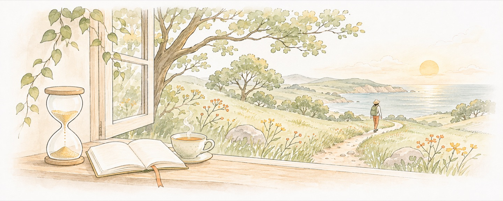

Skip to content
Hui Ning
Principles
AI
Biotech
Blog
People
About
中文
Home
Blog
Principles
AI
Biotechnology

Principles
One life. What follows?
Choosing where my attention goes
Forming a judgment I can stand behind
Leaving context for my future self
Turning understanding into action
AI
How I get agents to finish the work
AI as intellectual leverage
Biotechnology
AI4Bio: What evidence comes after a prediction?
When should a biological system act?
Questions and connections
AI in context: branches that meet
Biology in context: regulation, editing, and design